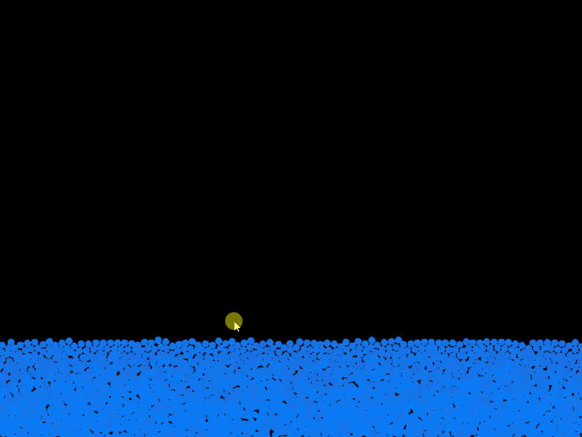
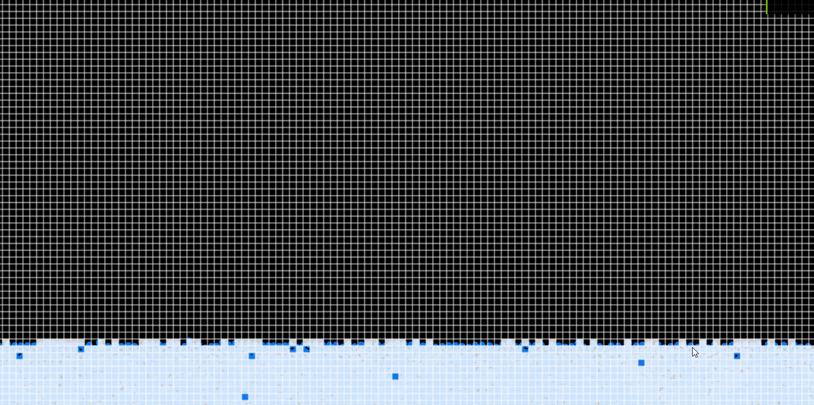
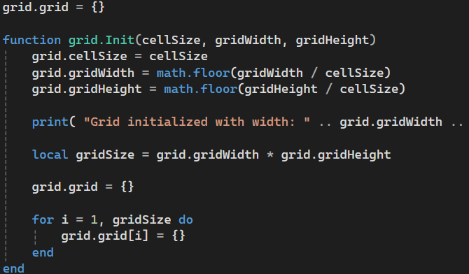

This is a water simulation I made for fun. I wanted to try Lua, so I thought a quick and simple water simulation would do the trick. I really like the satisfying look of the water.
Each water particle checks the grid cells next to it for collisions. If it finds one, it updates both particles to the correct position and velocity. Then it checks if it has entered a new grid cell and updates its cell parent.


The simulation grid is a 2D array of cells that contain the particles. Each cell has a list of particles that are currently in that cell. This allows for efficient collision detection, as each particle only needs to check for collisions with other particles in the same cell and the neighboring cells.
This project made me understand Lua a lot more. Another thing I learned is how fun it is to make your projects look visually interesting with the most simple graphics/art.
Devs: 1
Development time: 2 days
Engine: LOVE2D
The project is finished and is available on my GitHub. You can find it
here.